Contents
- Descriptive Statistics
- Presenting
- Interpreting Data
- Grouped Discrete Data
- Continuous Data & Frequency Distribution Table
- Measures of Central Tendency & Measures of Dispersion
- Scatter Plot & Correlation
- Line of Best Fit & Correlation coefficient
- Correlation and its coefficient using Google sheet
Preparation for Math Project
Unit 5 Statistics Preview (Jan. 15th, 2027)
Goal: Students can identify unit targets and copy the unit vocabs.
Warm-up: Copy the following into your notebook
A. Learning targets
Students can
- Describe the differences between categorical vs. quantitative data
- Describe the purpose of statistical investigations and when to implement an observational or experimental study
- Identify and explain sampling methods and their biases
- collect, compare, and contrast multiple data sets
- identify variables and populations of interest as well as data sources
- interpret a variety of graphical displays of statistical data
- prepare and present appropriate statistical reports
B. Unit vocabs
Descriptive, Discreet, Continuous data, Frequency, Central Tendency, Correlation, Sample, Data Dispersion, Outlier, Skewed, Data collection, Data presentation, Data analysis, Standard Deviation
Lesson 1- Descriptive Statistics (Jan. 19th, 2027)
Goal: Students can use the statistics terms to describe and organize data
Warm-up:
- Use the internet to find the meaning of the terms below and solve the problems.
- Which has categorical value?
- 3.4
- 6+3
- color of trees
- Which has numerical value?
- amount of rain
- locations
- eye color
- Which is "continuous" data?
- number of family
- test scores
- amount of rain
- Which is "discreet" data?
- my age
- my height
Class Activity: Quiz
- Go to Canvas and solve the quiz; Unit 5- Type of Data value
Lesson 2- Presenting data (Making Frequency Table)- (Jan. 20th, 2027)
Goal Students can watch the video to copy down data representation.
Warm-up;
Write down the two sample survey questions that have numerical values and answers to the questions. See also if they are in a relationship of Cause and Effect
Q. 1
a) On a scale of 1~10, How often do you text a day, a 1 is least often, and a 10 is very often?
b) On a scale of 1~10, how popular do you think you are, where a 1 is not popular, and a 10 is very popular?
Q.2
Collect the data from each questions and put them into a parenthesis. Eg.; (7, 9), (2.5), (3,7)....
Class Activity: Formative Assessment( 80% of the %40)
- Open Google sheet.
- Put the data from the Question 1 into a Google sheet in column A and B.
- Upload the file under Unit 5 Data Practice on Canvas
Watch the video and copy the notes.
Lesson 2- Presenting data (Making Frequency Table)- (Jan. 21st, 2027)
Goal Students can use raw data to create a frequency table and find Mean of the data
Warm-up: Copy the following question and set up a "frequency table " for the data without fertilizer using the raw data below.
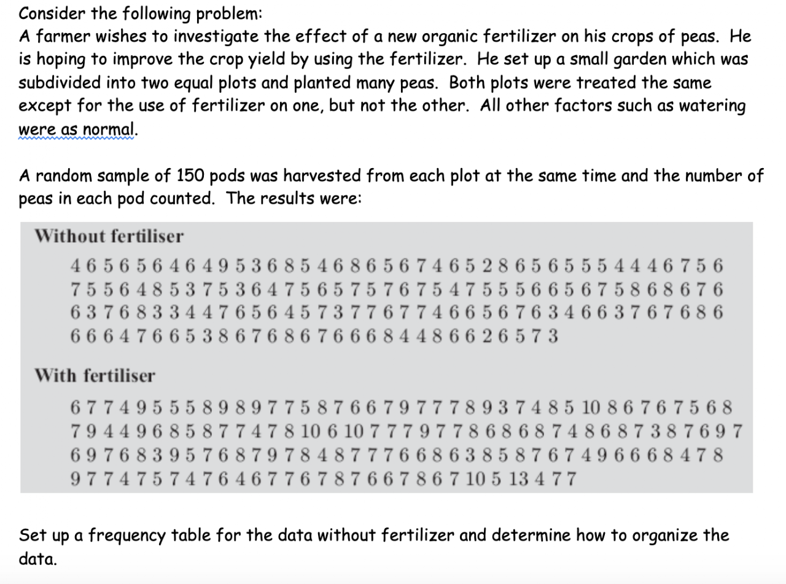
Lesson 2- Presenting data (Making Frequency Table)-(Jan. 22nd, 2027)
Goal Students can use raw data to create a frequency table and find Mean of the data
Warm-up
- Creat frequency table for the data "with" fertilizer below, find ' Mean', 'Median' and 'Mode' , into your notebook( Show your work).
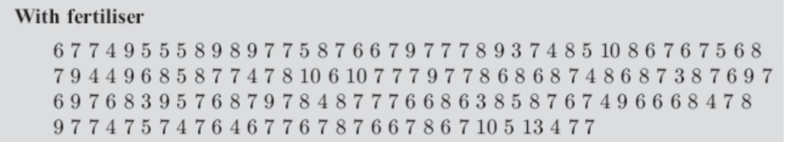
Classwork: Today, complete all the missing assignments; unit 5 Quiz, Unit 5 data practice
Class Activity -(Jan. 25th, 2027)
Goal Students can create two survey Questions.
Warm-up
Q1. Write the following two survey questions and identify which one represents the cause and which one represents the effect.
- How many cups of water do you drink per day?
- How often do you go to the toilet per day?
Classwork;
Look at the following examples and create similar questions of your own in your notebook.
- On a scale of 1 to 10, how often do you text per day? A 1 means least often, and a 10 means very often. (Cause)
- On a scale of 1 to 10, how popular do you think you are? A 1 means not popular, and a 10 means very popular. (Effect)
- before creating the survey questions, go to canvas and take the quiz first : Unit 5 Survey Data Type
4. Steps to follow:
- Create two questions that ask for numbers (i.e., numerical values), using a scale from 1 to 10.
- Ensure that the two questions are correlated.
Now, go to Canvas, enter the two survey questions into a Word document, and upload it under Unit 5 Two Survey Questions.
Collecting Data (Jan. 26th, 2027)
Goal: students can collect the raw data from the two survey questions
Class Activity:
Using the two survey questions you created yesterday:
- Walk around the classroom and collect answers from at least 15 students.
- Open a spreadsheet and enter the data.
- Label the first row as Q1-key word and Q2-key word for the corresponding questions.
- Submit the completed spreadsheet on Canvas: Unit 5 Collecting Data
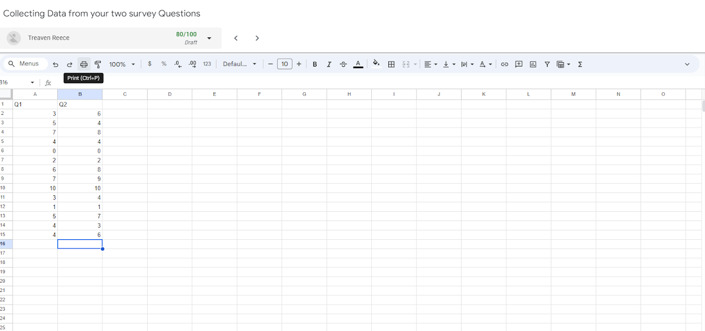
Lesson 2-1: Frequency Table and dot plots (Jan. 27th, 2027)
Goal: students can draw dot plots.
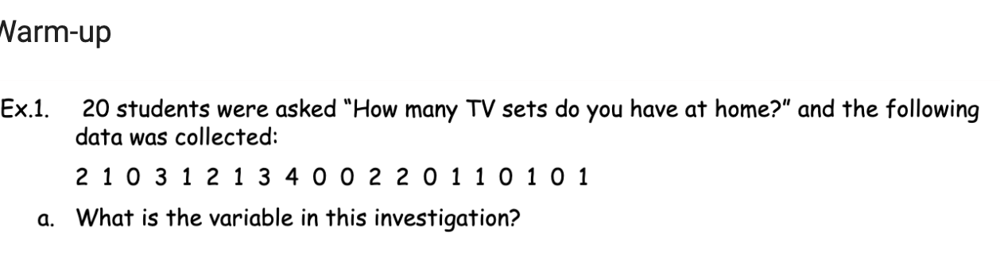
b. Draw a frequency table from the data above.
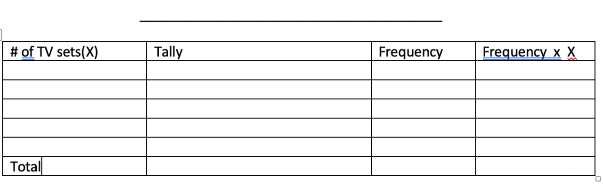
Classwork:
- Finish up your two survey questions and collecting data for assessments.
- Draw a dot plot graph after you watch the video
Lesson: Data Description (Jan. 28th, 2027)
Goal: Students can make data descriptions of their own survey questions.
Classwork; Data Description-Summative Assessment(0.7 of %60).
Go to Canvas, and submit your work under Unit 5 Summative Task-1
- Present your two survey questions and the data you collected for this task.
- On your Word document, write about your survey as closely as possible to the examples below.
- Please clarify the required format or sequence for the title number.
Please, see an example below
2. DATA
2-1 Two Survey Questions
Q1. On a scale of 1~10, How would you rate your outfit, a 1 being not good, a 10 being very good?”
Q2. On a scale of 1-10, how shy are you a 1 being not shy, a 10 being very shy?”
2-2 Data Collection
My data was collected by going around the classroom and asking my classmates my two survey questions during the class in Feb. 2026. They all are High School seniors at Gainesville High School in Georgia, USA.
2-3 Raw Data
The first digit number represents the number the student gave their outfit, and the second number represents how shy the student is. (9, 10) (5, 5) (8, 3) (8, 9) (3, 10) (4, 10) (6, 3) (3, 1) (9, 8) (6,2) (4, 9) (10, 5) (5, 5) ( 4, 10) (6, 1) ( 2, 10) ( 5, 7) ( 3, 6) ( 4, 7) ( 5,8) (3, 10) (3, 1) (7,1)
Notebook Check 9 (Jan. 29th, 2027)
Goal: students can prepare for the notebook checking.
Notebook contents should include:
Feb. 12 : Heading, Warm-up, Reflection
Feb. 13 : Heading, Warm-up, Reflection
Feb. 18 : Heading, Warm-up, Video, Reflection
Feb. 19 : Heading, Warm-up, Reflection
Feb. 20 : Heading, Warm-up, Reflection
Feb. 23: Heading, Warm-up, Reflection
Grading: Please, put the grade with the calculations in Unit 5 Notebook Check 9 on Canvas,
- 6 Headings x 3.3 pts
- 6 Warm-ups x 6.7 pts
- 1 Video x 30 pts
- 6 Reflections x 1.7 pts
Lesson 3- Interpreting Data : AMDM.QPR.3.(Mar, 2nd, 2026)
Goal: Students can find Central tendency and understand data distribution.
AMDM.QPR.3. Make predictions by analyzing averages and indices of large data sets through investigations of real-world contexts.
Warm-up
Q1. Use the internet and find the definition of Mean, Median and Mode
A) Mean:
B) Median:
C) Mode:
Q2. Find Mean, Median and Mode from the following data set
(3, 1, 7, 6, 8, 41 , 2, 6, 6 , 7, 9)
Q3. Which value can be considered an outlier from the data set above?
Classwork
Finish up Unit 5 Summative Task-1
Lesson 3-1: Interpreting Data: AMDM.D.2. (Mar, 3rd, 2026)
Goal: Students can understand outliers through box and whisker plot
AMDM.D.2. Build the skills and vocabulary necessary to analyze and critique reported statistical information, summaries, and graphical displays. 1
Warm-up
Q1. Organize the following data from the smallest to the greatest and find the median. Data- ( 3, 1, 7, 5 , 8, 24 , 2, 6, 0 , 7, 10)
Q2. Draw Box and Whisker plots with the following data and find outliers if any. Data-( 3, 1, 7, 5 , 8, 24 , 2, 6, 0 , 7, 10)
Watch the video on the right and copy the notes.
Classwork.
- Watch the videos above and take notes
- Catch up on missing assignments, if any.
Lesson 4: Grouped discrete data- MDM.D.1. & AMDM.D.3. (Mar, 4th, 2026)
Goal: Students can make a grouped discrete data in a table
AMDM.D.1. Organize and describe univariate and bivariate data.
AMDM.D.3. Apply statistical methods to design, conduct, and analyze statistical studies.
Warm-up: Copy the notes below
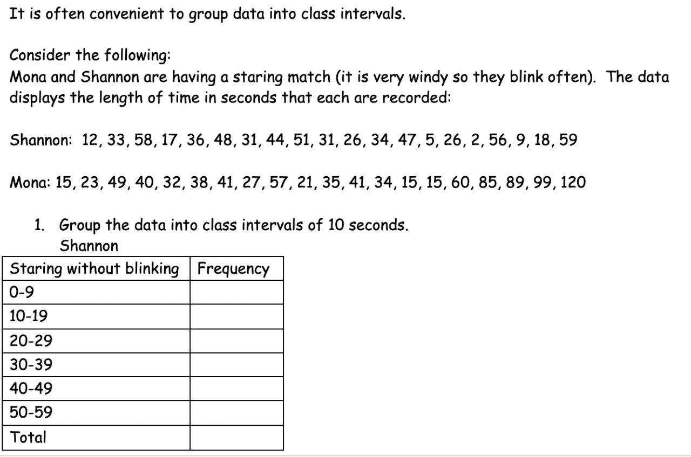
Lesson 4-1 Grouped discrete Data ((Mar, 5th, 2026))
Goal: Students can group data into class interval
Warm-up
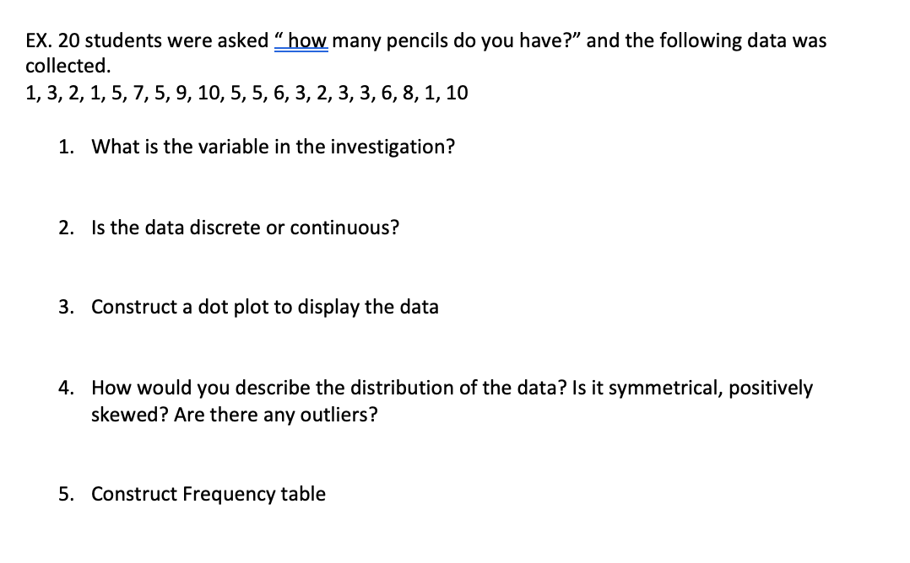
ClassActivity: Making Frequency Distribution Table. (Mar. 6th, 9th, 2026)
Goal: Students can organize the data into a Frequency Distribution Table.
ClassActivity: Unit 5 Summative task-2
Making Frequency Distribution Table.
For your tables, Open a Word document,
- and start with 3. Graph, and
- 3-1 Two Frequency Tables
- a) your first survey question, and data underneath.
- Create a table 4 x 7
- Label each column
- Don't forget the figure number in the corner.
- Find mean, media, and Mode at the bottom
- Submit the two tables on Canvas; Unit 5 Summative Task-2
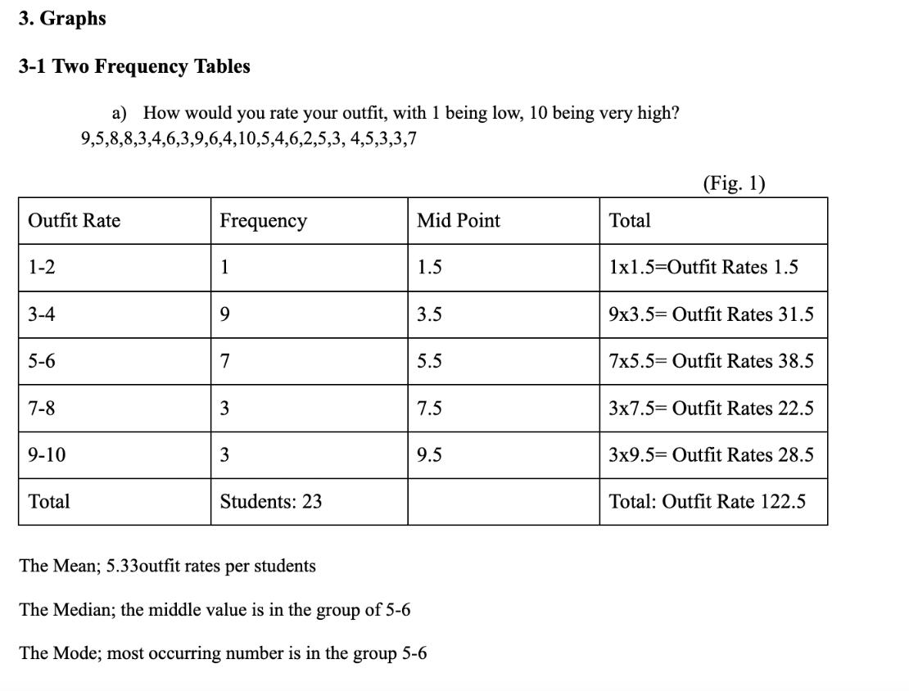
Do the same as above for the second table.
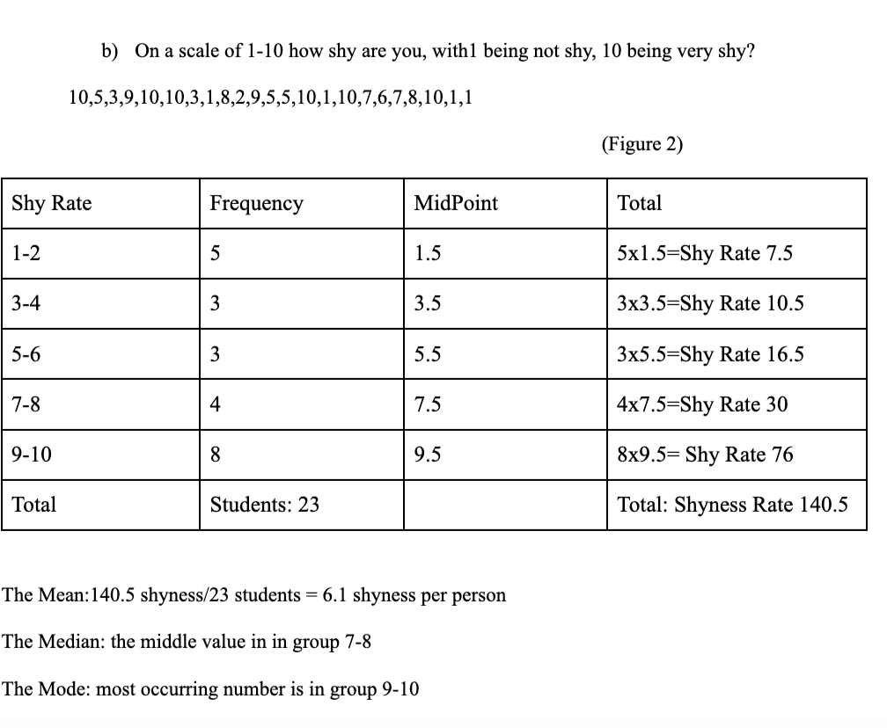
Lesson 4 Review- Discrete Data & Grouped data (Feb. 1st, 2027)
Goal: Students can tell grouped data from individual discrete data.
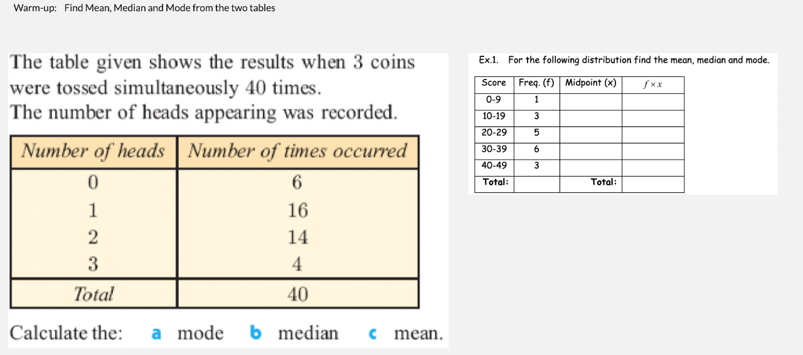
Watch the video below, and copy the notes.
Finding Mean, Median and Mode of grouped data
Classwork: finish up the Unit 5 summative task-2
Lesson 4 -2 Continuous Data & Frequency Distribution Table (AMDM. FGR. 9.2)- (Feb. 2nd, 2027)
Goal: Students can make a continuous distribution table and Histogram.
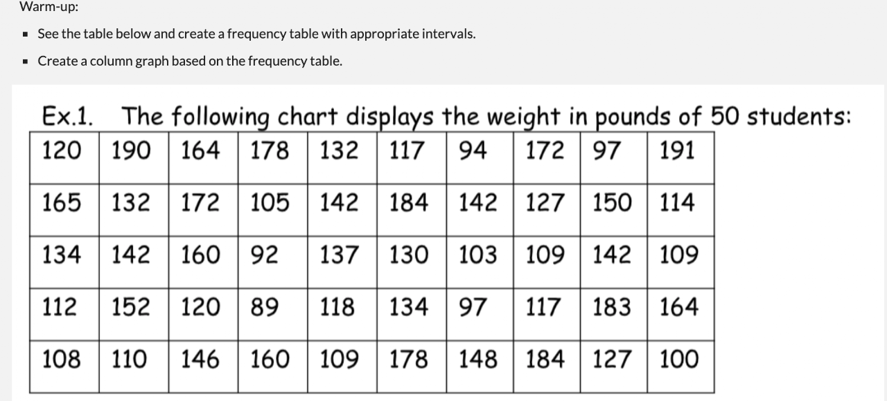
Watch and copy the video notes into your notebook.
[Document: I-Continuous Data & Frequency Distribution Tables — owner to add sharing link]
Lesson 5- Measure of Data Dispersion - (Feb. 3rd, 2027)
Goal: Students can generate a Box & Whiskers graph, using a website
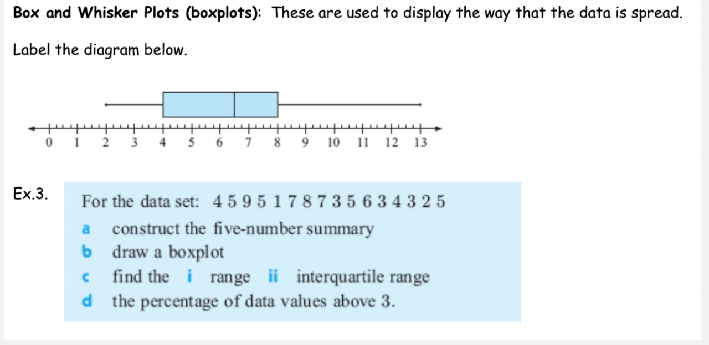
Lesson 5 : Distribution of the Data set (Feb. 4th, 2027)
Goal: Students can understand data distributions.
Warm-up: Copy the following
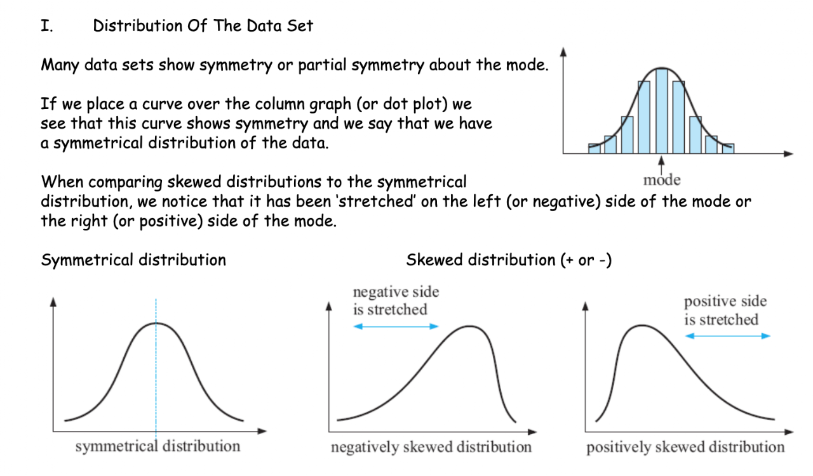
Classwork: Find the definition of Normal Distribution Curve(Bell Curve)-This distribution frequently appears in natural phenomena and human activities and serves as a foundation for statistical analysis.
Lesson 5 : Understanding Data set (Feb. 5th, 2027)
Goal: Students can interprete data.
Copy and solve the question below.
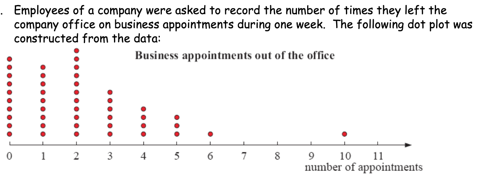
- What percentage of the employees did not leave the office?
- What percentage of the employees left the office more than 5 times?
- What is the most frequent number of business appointments out of the office?
- Describe the distribution of the data?
- Are there any outliers?
Unit 5 Formative Assessment (Feb. 8th, 2027)
Goal: students can make dot plots for analysis
Classwork: Unit 5 Formative Assessment(Unit 5-Dot Plot),
Draw two dot plots of your two survey question data on paper, describe the data distribution, and submit it on Canvas in a photo file.
Please refer to a sample below
Notebook Check 10 (Feb. 9th, 2027)
Goal: students can prepare for the notebook checking.
Notebook contents should include:
Feb. 25 : Heading, Warm-up, Video, Reflection
Feb. 26 : Heading, Warm-up, Reflection
Mar. 2 : Heading, Warm-up, Reflection
Mar. 3 : Heading, Warm-up, Video, Reflection
Mar. 4 : Heading, Warm-up, Reflection
Mar. 5th : Heading, Warm-up, Video, Reflection
Grading: Please, put the grade in the Unit 5 Notebook Check 10 folder as the example below.
- 6 Headings x 3.3 pts =
- 6 Warm-ups x 6.7 pts=
- 3 Video x 10 pts=
- 6 Reflections x 1.7 pts=
Total: _________
Lesson 6- Measure of Dispersion - (Feb. 10th, 2027)
Goal: Students can understand the Measure of Dispersion in Statistics
Warm-up: Copy and solve the following questions
Q1. Find the Mean and the range of the two data sets below.
- (-2,-1,0,1,2)=
- (-4,-2, 0, 2,4)=
Q2. What is Measure of Dispersion in Statistics?
Measures of dispersion help to describe the variability in data. Dispersion is a statistical term that can be used to describe the extent to which data is scattered. Thus, measures of dispersion are certain types of measures that are used to quantify the dispersion of data.
- Range is the difference between the highest and lowest values in a dataset. ( how far apart the biggest and smallest numbers in a set are )
- Variance measures the average squared deviation of each data point from the mean of the dataset. it shows how much the numbers in a set are spread out from the average.
- Standard deviation is the square root of the variance. It is like variance but in a way that's easier to understand because it's in the same units as the original numbers.
Classwork: Finish up the missing assignments; Two frequency tables & notebook check
Lesson 6- Measure of Dispersion - (Feb. 11th, 2027)
Goal: Students can generate a Box & Whiskers graph of their own data, using a website
Unit 5 Formative Task
- Create a Word document and type 3-2. Box& Whiskers
- Go to www.meta-chart.com or use A.I.
- Choose the Box and Whiskers Plot icon at the bottom
- Gather the Data from your survey question 1, and paste the data into the data box
- Label the graph
- Display the graph and download it onto your computer.
- Paste the graph on the Word document.
- (Repeat this step for the second survey question) and put it on Canvas: Unit 5 Box&Whiskers
- Look below the sample document for an example
Lesson 7- Scatter Plot and Correlation (AMDM. FGR. 9.2)- (Feb. 12th, 2027)
Goal: Students can make a scatter plot graph for a bivariate relationships
Warm-up: Copy the following
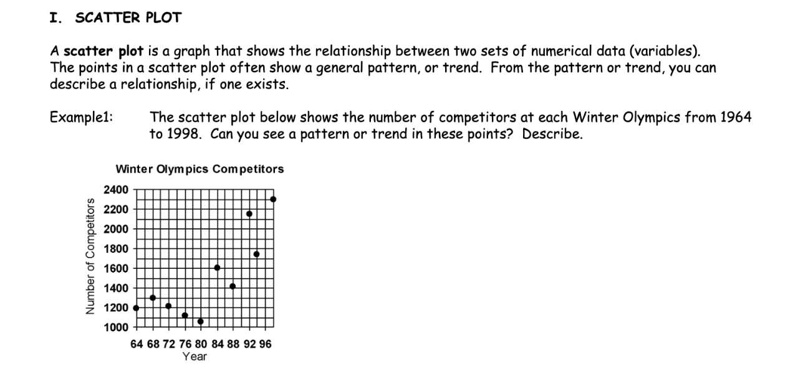
Classwork: Finish up the unit 5 Box and Whiskers.
Lesson 7- Scatter Plot and Correlation (AMDM. FGR. 9.2)- (Feb. 18th, 2027)
Goal: Students can make a scatter plot graph for bivariate relationships
Warm-up: Copy the following
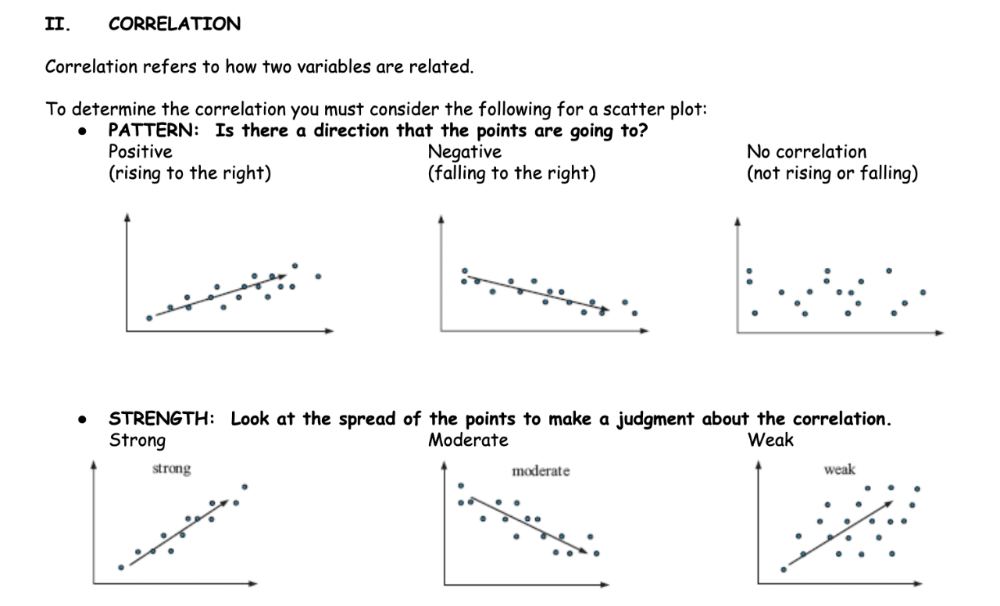
Classwork: Finish up the Box& Whiskers tasks
Lesson 7- Scatter Plot and Correlation (AMDM. FGR. 9.2)- (Feb. 19th, 2027)
Goal: Students can make a scatter plot graph for bivariate relationships
Watch the video on the right, and copy the notes into your notebook.
[Document: A-Correlation.docx — owner to add sharing link]
Lesson 7- Scatter Plot and Correlation (AMDM. FGR. 9.2)- (Feb. 22nd, 2027)
Goal: Students can draw a trend line and describe data in terms of pattern and strength.
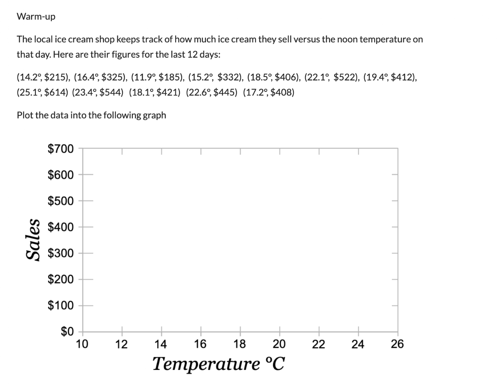
Task 1. Draw a trend line and Describe the data distribution in terms of Patterns, and Strength.
Lesson 8- Line of Best Fit & Correlation and Coefficient (Feb. 23rd, 2027)
Goal: Goal: Students can draw a line of best fit with help of Google spread Sheet
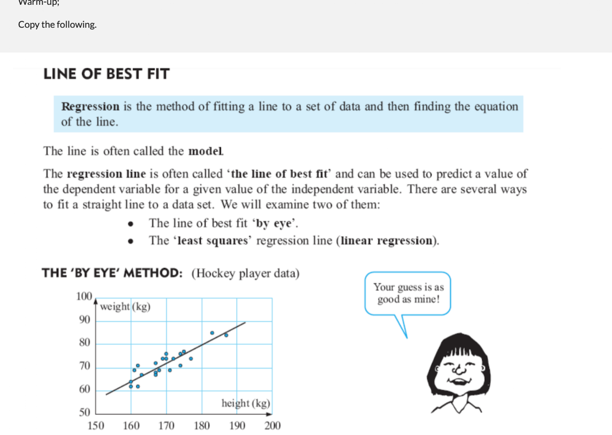
Q1. Find the equation of the line from the graph above, and predict a person's weight when his height is 170 cm.
Q2. Predict a person's height if the person is 200 cm tall.
Lesson 8- Line of Best Fit & Correlation and Coefficient (Feb. 24th, 2027)
Goal: Goal: Students can draw a line of best fit with help of Google spread Sheet
Watch the video on the right, and copy the notes into your notebook.
Friday this Week, Notebook Check 11. and the contents should include:
Mar. 10: Heading, Warm-up, video, Reflection
Mar. 11: Heading, Warm-up, video Reflection
Mar. 12: Heading, Warm-up, Reflection
Mar. 13: Heading, Warm-up, Reflection
Mar. 18: Heading, Warm-up, Reflection
Mar. 23rd : Heading, Reflection
Mar. 25th : Heading, Reflection
Classwork;
Complete your missing assignments:
Lesson 9- Correlation and its coefficient using Google Sheet (Feb. 25th, 2027)
Students can find the correlation and Coefficient by using Google Sheet program.
Warm-up: Research the following words
- Regression line:
- Correlation Coefficient:
Correlation Coefficient (R)
Strength of Correlation
± 0.90 to ± 1.00 : Very strong correlation
± 0.70 to ± 0.89 : Strong correlation
± 0.50 to ± 0.69 : Moderate correlation
± 0.30 to ± 0.49 : Weak correlation
0.00 to ± 0.29 : Very weak or no correlation
Class activity: Identify your R^2 and Interpret the Correlation Coefficient.
Notebook Check 11 (Feb. 26th, 2027)
Goal: Students can prepare for notebook check 11
Mar. 10: Heading, Warm-up, video, Reflection
Mar.11: Heading, Warm-up, video, Reflection
Mar. 12: Heading, Warm-up, Reflection
Mar. 13: Heading, Warm-up, Reflection
Mar. 18: Heading, Warm-up, Reflection
Mar. 23rd: Heading, Reflection
Mar. 25th: Heading, Reflection
Grading calculations...
7 Headings x 2.86 pts =
7 warm-ups x 5.72 pts =
2 videos x15pts=
7 reflections x 1.4pts=
Total:________
Lesson 9- Correlation and its coefficient using Google Sheet (Mar. 1st, 2027)
Students can find the correlation and Coefficient by using Google Sheet program.
Classwork- Practice for Unit 5 Summative task-3
Find the equation and Correlation and Coefficient of the Regression line of the two sets of data: (0, 3), (1, 4.47), (2, 5.91), (3, 7.43), (4, 8.95), (5, 10.6), (6, 11.96), (7, 13.46), (8, 15,04)
Here are the steps.
- Open your Google Sheets and plug the data in columns A and B accordingly.
- Click Insert tap and choose scatter chart.
- Make sure to click on Use Column A as labels.
- Choose Customize tap and Click Series and then click Trendline
- Choose Label and pick Use Equation.
- Click on show R^2
- Download and upload the graph on Canvas- Unit 5 Data Correlation Practice
Use the following video for your reference.
Review Lesson 7&8 -Line of Best Fit & Correlation and Coefficient (Apr.14th, 2026)
Goal: Goal: Students can draw a line of best fit with help of Google spread Sheet
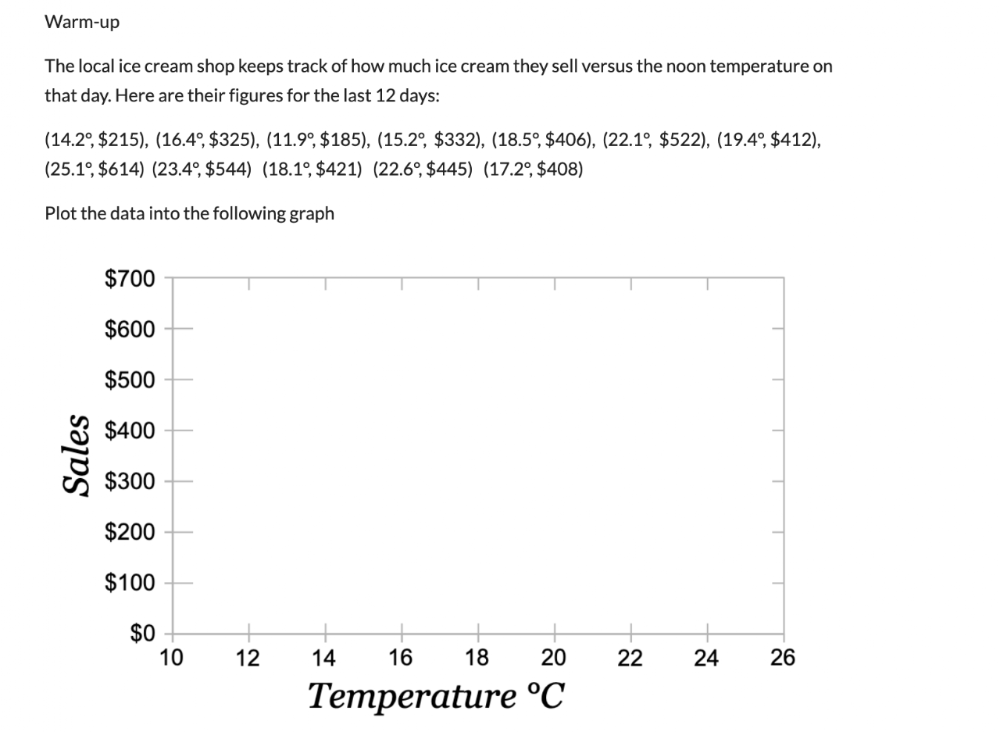
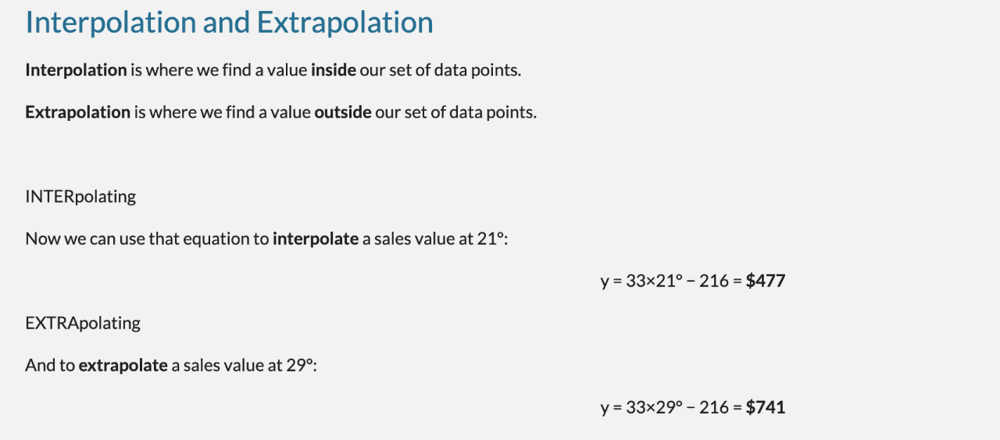
Classwork: From yesterday's activity for Formative Assessment,
Submit the scatter chart graph on Canvas: Unit 5 Data Correlation Practice
Class activity- Making a Scatter chart (Mar. 2nd, 2027)
Goal: Students will make a scatter chart, using their two survey question data
Unit 5 Summative Task 3 - Making a Scatter chart
Open google sheets and create a Scatter chart graph and download it onto a Word document. The steps to follow...
- Open your previous Collecting data document(or unit 5 summative task-1 doc.) and highlight the data in columns A and B. If you do not have it then, plug your survey question data into the google sheets in columns A and B accordingly.
- Click Insert tap and choose Scatter chart.
- Choose Customize tap and Click Series and then click Trendline
- Choose Label and pick Use Equation.
- Click on R^2 for the Correlation Coefficient
- paste the graph and its description into the word document and submit it for Unit 5 Summative task-3
A Sample is below: put the graph and the description in a word document
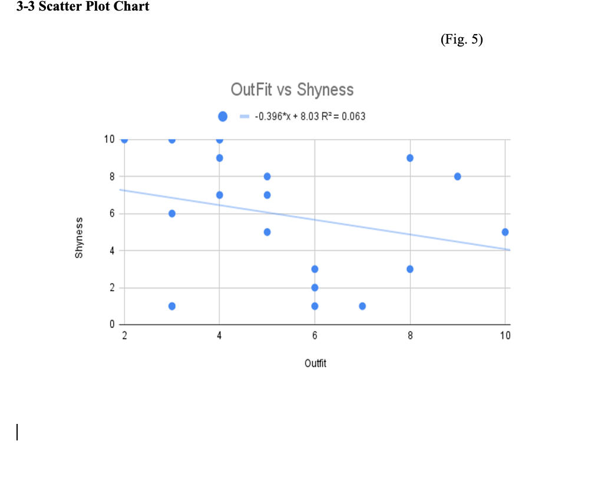
- Description of the Scatter graph
From the graph above, the function of the line is -0.396x+8.03, and there appears to be a negative correlation. However, since the R-squared value (Correlation Coefficient) is 0.063, the strength of the relationship is negligible. This indicates that there is no significant correlation between Outfit and Shyness. Please refer to the table below for further details.
Correlation Coefficient (R)
Strength of Correlation
± 0.81 to ± 1.00 : Very strong correlation and perfect correlation
± 0.61 to ± 0.80 : Strong correlation
± 0.41 to ± 0.60 : Moderate correlation
± 0.21 to ± 0.40 : Weak correlation
0.00 to ± 0.20 : no correlation and very weak
Catch-up (Apr. 16~17th, 2025)
Goal: Students can complete all missing assignments.
Classwork:
Finish up any missing assignments:
- Unit 5 Summative task 3
- Unit 5 Data Correlation Practice
- All assignments will be closed after this weekend, except for those students with a failing grade.